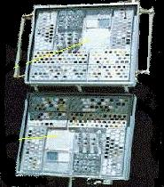
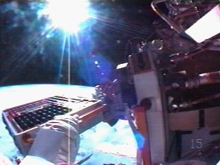
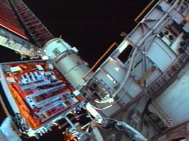
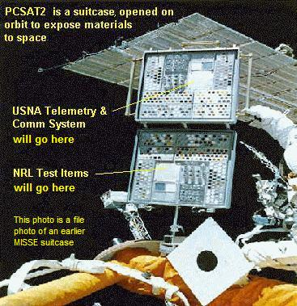
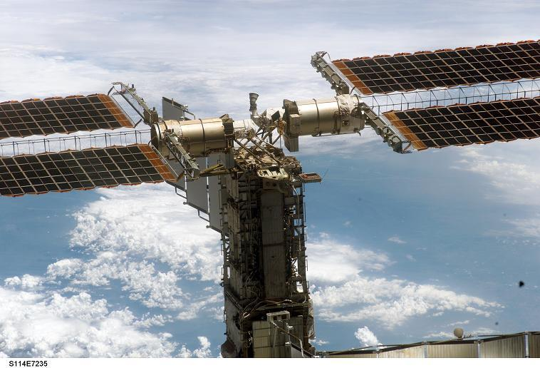
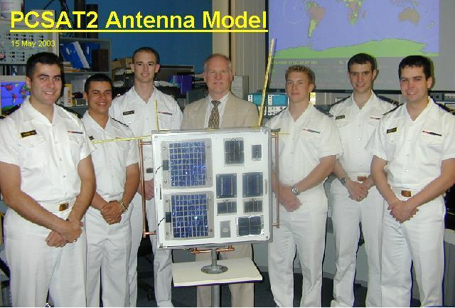
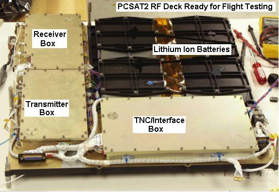
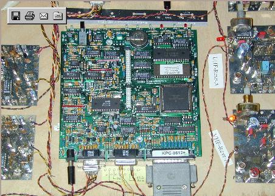

PCSAT2 Design Page

US Naval Academy Amateur Radio External ISS Experiment
US Naval Academy Satellite Lab
Bob Bruninga, WB4APR, Principal Investigator
Midshipmen Otero, Silver, Jones, Kolwicz, Evans, and Henry (Class of 03)
PCSAT2 HAS RETURNED TO EARTH: After a final month of special amateur radio communications
experiments with the FM Voice repeater,
PCSAT2 was recovered from the outside of the ISS by
astronauts on the 3rd EVA of mission STS-115 and it has now been returned safely to Earth.
This is the first Amateur
Radio Satellite that has ever returned intact and operational.
We look forward to opening it up and seeing what a year in space has done to it.
We hope to follow up with future missions (PCSAT3).
PCSAT2 post-flight Photo Gallery
PCSAT2 Operations web page
PCSAT2 BEGAN OPS on 3 Aug 2005: PCSAT2 (looks like an astronaut suitcase) was installed by
astronaut Soichi Noguchi
on the outside of the ISS on 3 Aug during EVA3. The left photo is the suitcase in
his left hand with the Solar Cell side which should face the sun. The right photo
is the backside with PCSAT2 electronics under the
gold colored thermal blanket. The ISS P6 truss and ISS solar array axis
are in the background. There are some tape samples on its outside to see
how they weather in space.
See our summary of day 1 activities.
PCSAT2 completed a 4 week test of its PSK31 Amateur Radid HF/UHF Transponder mode and is now
operating in APRS Packet Digipeater mode. Its telemetry and downlink user data is being collected by special ham radio volunteer
ground stations around the world. You can see the
live telemetry on the web.
Announcements will be made on the AMSAT-BB Email reflector.


Click for great view installed and
Zoomed in view
PCSAT2 OPERATIONS: The PCSAT2 Operations web page
is used for informing ground stations and volunteers. Currently our main objective is
support user packet radio
communications experiments with a 145.825 uplink and 435.275 +/- 10 KHz
Doppler downlink. Experiments were conducted for the first 4 weeks with the
PSK-31 transponder showing excellent signals at the beginning with only a 4Watt
29 MHz uplink signal. But after a few weeks the receiver has faded and
it takes 100W or more to be heard. (Later discovered to be a broken antenna during the EVA installation of the suitcase). This mode is now considered not operational.
See the image of the first PSK signals
we heard through the PSK-31 transponder.
PCSAT2/MISSE5/PEC: MISSE is a Materials International Space
Station Experiment using a Passive Experiment Container
(PEC) to fly space environment samples
to space and back. It has flown 4 times including a year on
MIR as MEEP.
It is attached to the exterior of the ISS during an EVA to expose
its samples to space as shown below. MISSE5 was assembled at the Navy Research Labs,
with samples of high-tech DOD solar cells on the side
of MISSE that faces the sun. It has no Radio system and accumulates its data in EEPROM for review on return to earth. On the back side, the Naval Academy was able to conjur a ride for its
Amateur Satellite Communications system similar to what it is flying on
PCsat . It supports
educational and student outreach objectives of both AMSAT and ARRL as well as provide
telemetry on the health of the system.

The PCSAT2comm system operates in the ITU
Amateur Satellite Service in
cooperation with ARISS
and can provide a PSK-31 multi-user transponder, an FM voice
repeater for possible use with ISS Crew communications and an AX.25 packet system
for possible use as a UI digipeater and for telemetry, command, control as shown in the
block diagram.
The PEC is basically a suitcase for travel that opens in space as shown above.
The solar panel side of the PEC contains new technology solar
cells which will be captured into EEPROM on the techincal
investigation of the radiation effects on these cells. THe EEPROM science data will be reviewd after a year in space when the PEC hardware is returned to Earth. See the
Paper on PCSAT2's operation in the Amateur Satellite
Service or the
Full ITU rules as published by the IARU .
This image below (25% resollution) is the actual mounted position (in the center facing up):

Click for full rez (1 Meg)
Another full rez big view (Lots of station hardware(1 Meg)
PCSAT2 Antenna angles (various!)
and all the station blockages underneath in the RF keep out zone sketch
Older pre-launch pictures of station ideas:
Our original sketch and Original plan
Planned P6 mounting location photo and Planned P6 closer photo
PEC drawing deployed and another Location considered on Airlock.
and the RF keep out zone
SPONSORING ORGANIZATION: The PCSAT2 project is a student engineering project under the
USNA Aerospace Engineering program with the guidance of LTCL Billy Smith
and Satellite Lab Senior Research Engineer, Bob Bruninga, WB4APR. The USNA Amateur
Radio Club and other volunteer control operators are the spacecraft operating organization. Since PCSAT2 is flying
on the ISS, its operations will be fully coordinated with the ARISS (Amateur Radio on the ISS)
international team.
PCSAT2 DESCRIPTION: PCSAT2 uses the same dual redundant AX.25
command and control system as used on the
original PCsat (NO44) offering 8 on/off commands, 20
telemetry channels. It also
supports the
Digital Comms Relay support of the PCsat/APRS mission.
The uplinks are on 2 meters and the downlinks are in the 435 MHz band to avoid any
possible interference with existing ARISS 2 meter operations. Observers will note that
this is exactly opposite of the long range plan for all ARISS downlinks on 2 meters
and uplinks on other bands, but it had to be this way, beacuse at the time of the
PCSAT2 design freeze in Dec 2002, there was no equipment on ISS capable of cross band
operation. The Kenwood D700 was not to arrive for several months later. Unfortunately
the 2 year Shuttle delays allowed the D700 to arrive on ISS before PCSAT2 but long
after the PCSAT2 design freeze which required it to operate down on UHF.
PCSAT2 has quad redundant transmit inhibits for EVA safety issues Also, the
mission lifetime of PCSAT2 is only 1 year, because its host is a sample-return mission, thus
terminating any long term conflicts in spectrum management. After PCSAT2 is removed
from ISS, then hopefully all future ISS Amateur Radio missions will use 2m downlinks
and other bands for uplinks to avoid any operational interference between modes.

Other midshipman photos: PCSAT2 prototype,
Antenna SWR measurements,
Radio configuration.
BAND PLANNING: One of the key issues with any Amateur Radio experiments on ISS is
the requirement to avoid any mutual interference between systems. For this reason,
future systems will probably move all uplinks and downlinks on ISS into separate bands.
This is so that multiple uplinks and multiple downlinks can be going on simultaneously.
At the time of the PCSAT2 design freeze (Dec 02), ISS operated with both uplinks and
downlinks on 2m, thus, 2m was only available as an uplink to PCSAT2. Thus PCSAT2 had
to be designed with a UHF downlink to avoid transmitting on 2m, even though
downlinks on 2m is much preferred for reaching schools and simple stations and
meeting our mission objectives. Until the 1 year PCSAT2 mission is over, we are stuck with this UHF downlink mode. Ultimately, we believe all ISS downlinks
should be on 2 meters and have been working from our
original paper to that regard.
In the mean time, here is a possible
old band plan idea. These links
are opinions only, and have no credibility with ARISS.
COMMUNICATIONS MISSION DETAILS:
The PCSAT2 mission was an opportunity to augment existing Amateur Radio ARISS
communications experiments with an external autonomous communications payload.
In this regard, it had three potential uses:
A UI-Digipeater to help ease congestion on the currently shared ARISS PMS (Packet Mail system)
A PSK-31 transponder
for multi-user comms to improve accessibility for schools
and ARISS outreach programs
An FM Voice repeater for full duplex
special ARISS or crew communications to facilitate school outreach.
Routine Telemetry on the amateur radio spacecraft systems.
USER RECOMMENDATIONS: As was the case for PCsat, and in accordance with
the rules for operation in the Amateur Satellite Service, all duly licensed
operators worldwide are welcome to use the PCSAT2 transponders in accordance
with the published guidelines. To keep users fully informed of their expected
uplink requirements, we have published and maintain an active and current
User Service Agreement for guidance to all users.
This kind of open publishing of the detailed user expectations pioneered by PCsat was
entirely successful and we were very pleased that Amateur Satellite operators worldwide
in general adherred well to the recommendations for the benefit of all.
HARDWARE AND DESIGN DETAILS:

Antenna details:... Plan,
Corner Plate, the
Drawing and
New idea,
EZNEC antenna model.
Antenna Photos:.... Corner Hinge Assy,
Corner PCB and tuning ckts,
Closeup details.
Antenna Phasing:.
UHF ,
VHF ,
Matching Ckt,
PCB Layout,
T/R sw,
Assembly Notes.
Assembly Plans:...
Interface Brd,
Phasing Board,
Receivers,
TXA,
TXB, and
TXC.
Ibrd/TNCs.
Communications:.
Block Diagram .
PSK31 10m RX photo1,
Photo2, and
Photo3.
Fuse Selection:.... Use of PTC fuses in Vacuum rated at 50%.
100 ma Fuse
1.1 amp Fuse
Frequencies:........ PCSAT2 Operations in the
ITU Amateur Satellite Service and the
IARU Rules.
Ground Equipt:...
GSE connector,
User Equipment,
EMI Test config, and
GSE Test Setup.
Interface Board
Audio Ckt,
Assy plan.
Mechanical Items: Shelf Detail,
PEC box,
Handrail clamp, and a
Connector Location sketch.
Material Items:....
Parts List.
Operations Plan:...
Telemetry Collection Plan,
PSK-31 Items:....
Miroslav Kasal's 29 MHz PSK-31 Receiever schematic .
Power System:....
Distribution Ckt,
Comms Power Budget, and the
Actual Power Budget.
Prototype Photos:.....
Prototype TX and
TNC pan.
Requirements:......
Initial concept requirements for the AX.25 system.
RF Subsystem:....
RF Functional Block Diagram and
Frequency compatibility with ARISS.
Telemetry Items:...
Multiplexer,
Telemetry Eqns, and the
First TLM data.
TNC Modifications:...
KPC-9612 Mods
Thermal Items:..... An early
Thermal Approximation
Unresolved ideas:..Possible
LED Status Indicators (not implemented).
Wiring Items:.........
Cables ,
Harness ,
Original Coax ,
Final Coax ,
RX internal and
TX internal .
PCSAT2 TELEMETRY SCREEN: The screen below shows what the PCSAT telemetry
screen looks like. Whenever PCSAT2 is on the air, even on the ground in testing, you
can monitor the APRS worldwide Internet system and see it.

PROTOTYPE Circuit Boards:
Click for high-res
The TNC COMM system (one of 2) and the dual receivers and dual transmitters.
The digital communications relay will operate
within the ITU regulations for educational/outreach operations in the Amateur Satellite Service,
to provide simple Satellite digital communications for amateur satellite operators and
educators and possible remote environmental sensors
worldwide Examples .
This comms mission will provide a follow-on extension to the educational
communications mission of PCsat,
Boats at sea, cross country travelers,
expeditions, or other travelers far from existing
APRS terrestrial communications infrastructure.
The Transponder and PEC data is captured by existing PCsat-to-Internet ground stations and
fed into the existing
worldwide internet linked APRS system. The PEC mission would
join ISS, MIR, PCsat and several other on-orbit experiments
(ASTARS)
that have been conducted over the years leading up to this exciting capability.
Here are several additional PHOTOS, DRAWINGS and Documents:
Terminal Node Controller (photo)
TNC mods for telemetry
UHF 2 Watt Transmitter (photo) (VHF shown, but UHF is similar)
VHF receiver (photo)
Evolution/Chronology of this project.
The AX.25 segment of the PCSAT2 communications mission has been demonstrated a
number of times in space via PCsat,
MIR School tests, the Shuttle SAREX,
and the SPRE mission. . It is also a spin off of a previous
launch opportunity that we had in 1998 called NATSweb that
almost got launched on SEA-LAUNCH..
The PCSAT2 Communications mission is a project to produce a viable external ISS payload
in a very short time frame using off
the shelf components where possible. Here are the background topics of design:
Old IDEAS and OBSOLETE THINGS:
PHOTO of original RF model with MLI blanket.
Alternate Antenna idea.
Connector assignments,
Board layout
APRS is the Automatic Packet Reporting System that the Naval Academy uses for
tracking its boats and a variety of other vehicles and networks using the
APRS
Automatic Packet Reporting System . The PEC Communications transponder would be
operated under the rules of the Amateur Satellite Service and the rules of the FCC.
You are visitor:
 <== not visible on IE, but NetScape sees it
.
<== not visible on IE, but NetScape sees it
.
{kind=link}
{kind=link}
{kind=link}
{kind=link}
{kind=link}
{kind=link}
{kind=link}
{kind=link}
{kind=link}
{kind=link}
{kind=link}
{kind=link}
{kind=link}
{kind=link}
{kind=link}
{kind=link}
{kind=link}
{kind=link}
{kind=link}
{kind=link}
{kind=link}
{kind=link}
{kind=link}
{kind=link}
{kind=link}
{kind=link}
{kind=link}
{kind=link}
{kind=link}
{kind=link}
{kind=link}
{kind=link}
{kind=link}
{kind=link}
{kind=link}
{kind=link}
{kind=link}
{kind=link}
{kind=link}
{kind=link}
{kind=link}
{kind=link}
{kind=link}
{kind=link}
{kind=link}
{kind=link}
{kind=link}
{kind=link}
{kind=link}
{kind=link}
{kind=link}
{kind=link}
{kind=link}
{kind=link}
{kind=link}
{kind=link}
{kind=link}
{kind=link}
{kind=link}
{kind=link}
{kind=link}
{kind=link}
{kind=link}
{kind=link}
{kind=link}
{kind=link}
{kind=link}
{kind=link}
{kind=link}
{kind=link}